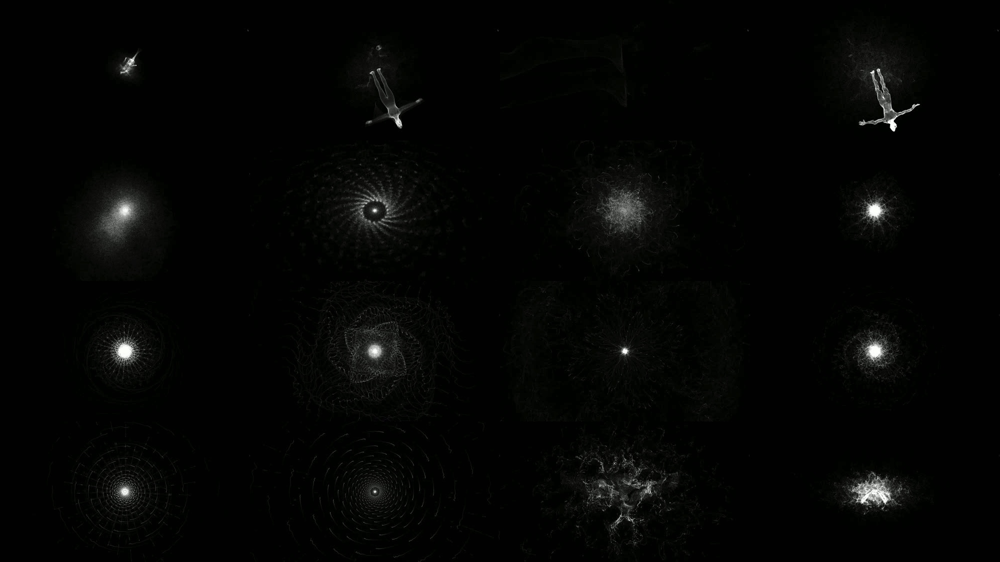

Metempsychosis (2017)
Video Installation
webgl, three.js, gpgpu, audio-reactive
Spring Show, NYU, Shanghai, China
An experimental simulation of the afterlife coded in WebGL using the GPGPU and FBO to render 262k particles in real-time. It uses curl noise, simulated gravitational attraction, and time to define and distort parametric surfaces and 3D models.
These are some video stills of the simulation.

Inspiration
From dust you came, and to dust you shall return. This simulation uses fluidity, oscillation, modulation, repetition, and randomness to create patterns that are visualised with particle dust. Each dust particle is simple and has a defined path, together they become chaotic, complex, and represent our temporal lives in transition. We have a very intimate connection with the tangible and the known. It is the unknown that begets creative exploration.
Technicals
The project is a study utilizing the power of the GPU to do more than simply render to the screen. We exploit the power of the architecture of the GPU to do parallel computation -- calculating and simulating millions of particles in real time. Whereas we typically use Frame Buffer Objects (FBOs) to hold RGBA values, we use them here to store XYZ position, velocity, and acceleration. This allows us to simulate and store particle position data in fragment shaders as textures in the GPU rather than as objects in the CPU, which allows for massive speed-ups due to parallelization.